Installation
Ref : Gitea docs
There are some option for you to install for me i love to install from binary and config everything myself
First you have to create your Linux container aka. Lxc or CT (in proxmox) then install gitea
apt update && apt full-upgrade -y
apt install net-tools git
# From gitea official doc
wget -O gitea https://dl.gitea.com/gitea/1.23.7/gitea-1.23.7-linux-amd64
chmod +x gitea
When you create your CT -> proxmox will create a root user for you to ensure security we have to create a dedicated user for gitea service
Create User
adduser \
--system \
--shell /bin/bash \
--gecos 'Git Version Control' \
--group \
--disabled-password \
--home /home/git \
git
!! This user create for gitea service only if you want to create some user to use inside this server you shoud considered create a new user !!
Config mount volume at the start of installation on proxmox
for me → root boot drive 8gb mounted at /
→ mp0 mount drive at /var/lib/gitea
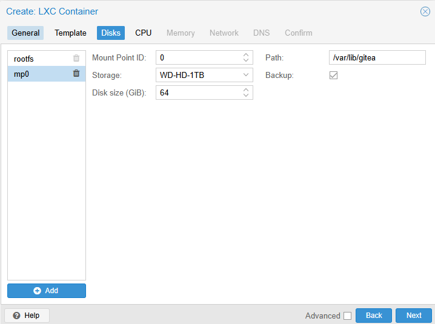
So the set up should be like this (in Gitea document also provide these command)
mkdir -p /var/lib/gitea/{custom,data,log}
chown -R git:git /var/lib/gitea/
chmod -R 750 /var/lib/gitea/
mkdir /etc/gitea
chown root:git /etc/gitea
chmod 770 /etc/gitea
There might have some error about lost+found directory in
/var/lib/giteajust ignore them. they don't have any impact
Define Gitea workdir then copy gitea binary to the system binary
export GITEA_WORK_DIR=/var/lib/gitea/
cp gitea /usr/local/bin/gitea
Next i want to config it to run as a systemctl service
do nano /etc/systemd/system/gitea.service
[Unit]
Description=Gitea (Git with a cup of tea)
After=syslog.target
After=network.target
[Service]
# Uncomment the next line if you have repos with lots of files and get a HTTP 500 error because of that
# LimitNOFILE=524288:524288
RestartSec=2s
Type=notify
User=git
Group=git
#The mount point we added to the container
WorkingDirectory=/var/lib/gitea
#Create directory in /run
RuntimeDirectory=gitea
ExecStart=/usr/local/bin/gitea web --config /etc/gitea/app.ini
Restart=always
Environment=USER=git HOME=/var/lib/gitea/data GITEA_WORK_DIR=/var/lib/gitea
WatchdogSec=30s
#Capabilities to bind to low-numbered ports
CapabilityBoundingSet=CAP_NET_BIND_SERVICE
AmbientCapabilities=CAP_NET_BIND_SERVICE
[Install]
WantedBy=multi-user.target
don't be afraid gitea docs also provide this as well you can take a look docs
Then start the service
sudo systemctl daemon-reexec
sudo systemctl daemon-reload
sudo systemctl enable gitea
sudo systemctl start gitea
Create a new user to config inside this server
Instead of using root user to do anyhing it a best practice to using another sudoer user instead
# Gitea Server Machine
adduser myuser
usermod -aG sudo myuser
Preparing for SSH
# Our Machine
ssh-keygen -t ed25519 -C "myuser@gitea"
type $env:USERPROFILE\.ssh\myuser_gitea.pub
# Copy the content then paste in the next section
# Gitea Server Machine
mkdir -p /home/myuser/.ssh
echo '<your output from type $env:USERPROFILE\.ssh\myuser_gitea.pub>' > /home/myuser/.ssh/authorized_keys
# if you use linux try finding cat ~/.ssh/myuser_gitea.pub
chown -R myuser:myuser /home/myuser/.ssh
chmod 700 /home/myuser/.ssh
chmod 600 /home/myuser/.ssh/authorized_keys
Open sudo nano /etc/ssh/sshd_config and setting like this
[...]
Port 2222
#LoginGraceTime 2m
PermitRootLogin no
#StrictModes yes
#MaxAuthTries 6
#MaxSessions 10
PubkeyAuthentication yes
PasswordAuthentication no
[...]
This configuration provide you 2 things
1. No Root Login Accepted
2. Change openssh port to 2222 avoid port conflict with Gitea
then
sudo systemctl restart ssh
sudo systemctl restart gitea
Bonus section since my laptop are window based
Config ssh knowhost from client side
At C:\Users\<user>\.ssh added this
- Host can be IPv4 address (in my network i have set up DNS server to resolve internal domainname to private IPv4 address)
[...]
Host gitea.local
HostName gitea.local
User myuser
IdentityFile ~/.ssh/myuser_gitea
IdentitiesOnly yes
[...]
no need to do complicate thing because when you gen ssh-keygen the .pub and other key will be in this folder
Try Connecting with port 2222
ssh -p 2222 myuser@<your-domain>
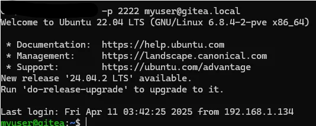
That work!! nice!!
Now visiting gitea server domain
192.168.1.176:3000 -> change to your private IPv4 address
It will pop up configuration -> for beginner i recommend using SQLite3 and also don't forget to create a admin user
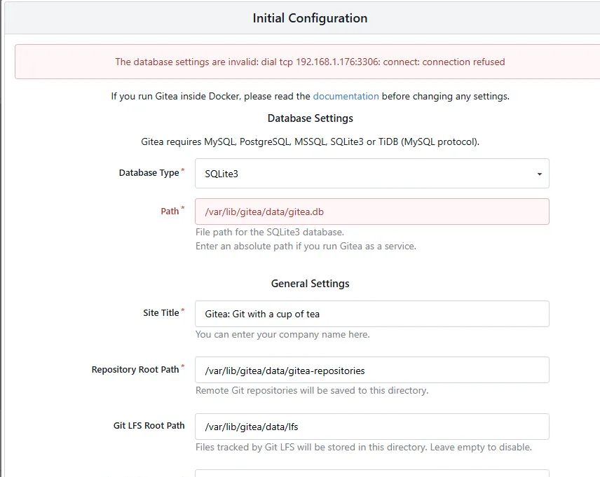
I think i will change the db in the future
Now test ssh to a repository
First you have to add your public key to the gitea ssh key / gpg key
# in our machine
ssh-keygen -t ed25519 -C "test@gmail.com"
# save key as gitea_testuser
type $env:USERPROFILE\.ssh\gitea_testuser.pub
#then copy ssh and paste to gitea ssh-key
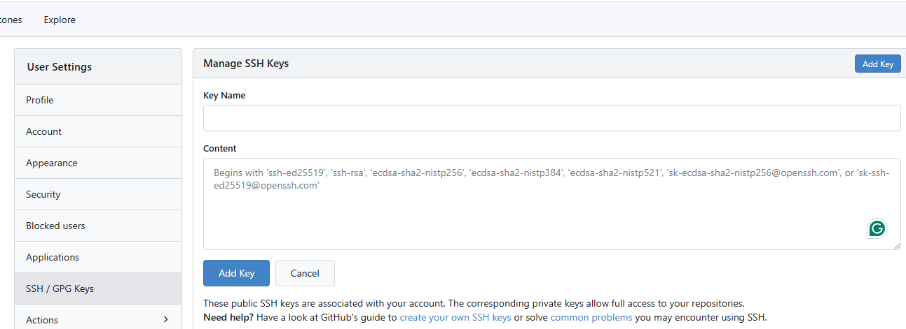
Next is the Problem , the part that document doesn't mention
I try it myself, i follow the instruction but some how cannot push my code on the repo
and i found that it a port conflict problem and sometime gitea built-in ssh service doesn't start properly
The editted nano /etc/gitea/app.ini
note that we have config the System sshd to use port 2222 as a ssh port
now we need to config sudo nano /etc/gitea/app.ini
add START_SSH_SERVER = true to the server part
[.......]
[database]
DB_TYPE = sqlite3
HOST = 127.0.0.1:3306
NAME = gitea
USER = gitea
PASSWD =
SCHEMA =
SSL_MODE = disable
PATH = /var/lib/gitea/data/gitea.db
LOG_SQL = false
[repository]
ROOT = /var/lib/gitea/data/gitea-repositories
[server]
SSH_DOMAIN = gitea.local
DOMAIN = gitea.local
HTTP_PORT = 80
ROOT_URL = http://gitea.local:80/
APP_DATA_PATH = /var/lib/gitea/data
START_SSH_SERVER = true
DISABLE_SSH = false
SSH_PORT = 22
LFS_START_SERVER = true
LFS_JWT_SECRET = <jwt-secret>
[.......]
don't forget to change to Your domain
then
sudo systemctl restart ssh
sudo systemctl restart gitea
sudo ss -tulnp | grep :22
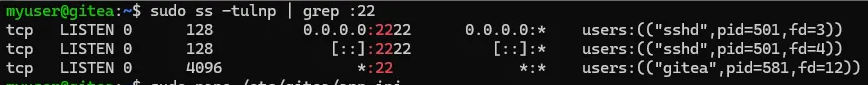
okay so it may work now
Next try to test push,pull using ssh
just using some random coding folder then following this step
Creating a new repository on the command line
touch README.md
git init
git checkout -b main
git add README.md
git commit -m "first commit"
git remote add origin git@gitea.local:admin/testrepo.git
git push -u origin main
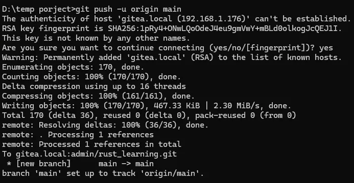
ignore the typo it just a rush typing to test the connection
let create a repo from gitea
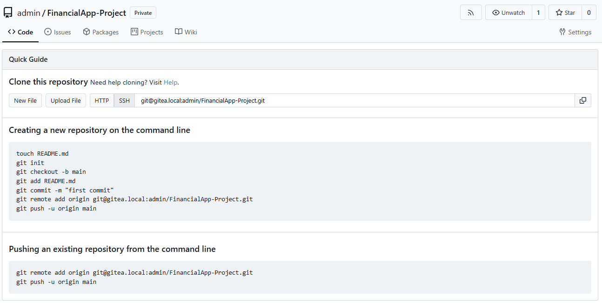
then git clone to local machine
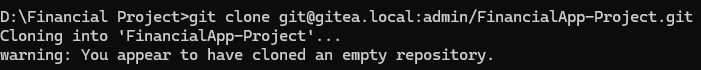
Create Some readme.md then push to gitea
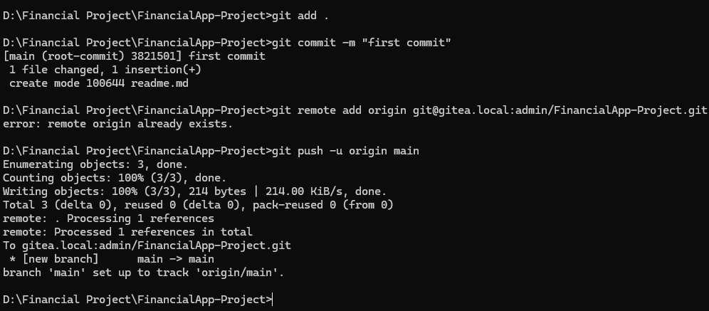
Now we can successfully self-hosted our git
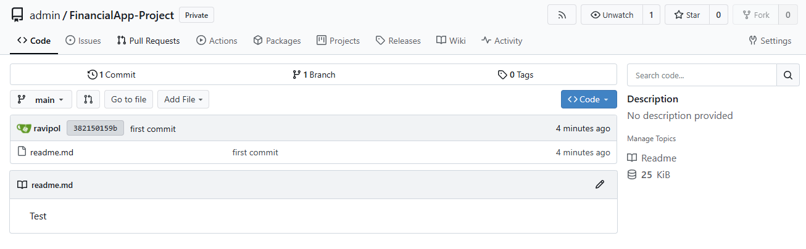
That is all for gitea service you can push your project and anything like this
like github
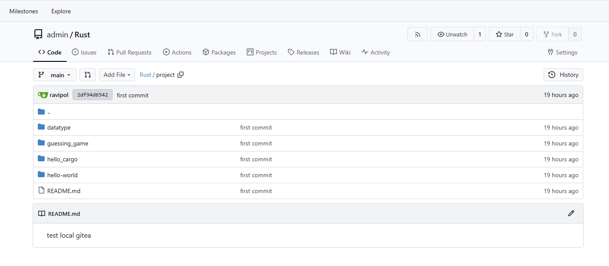
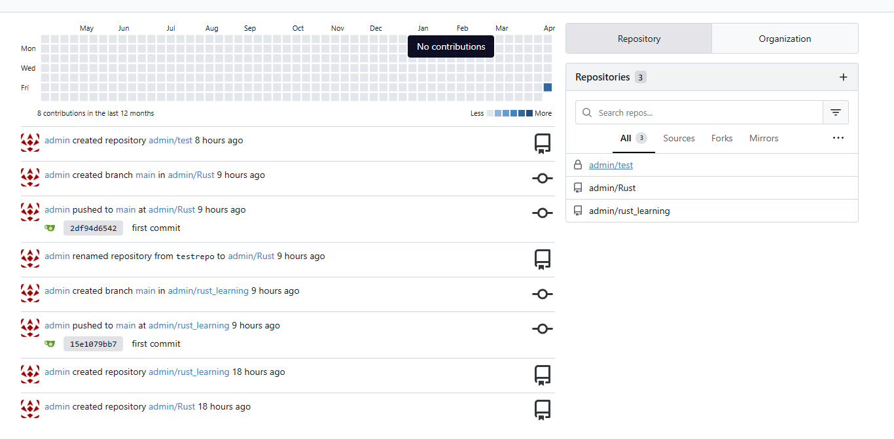